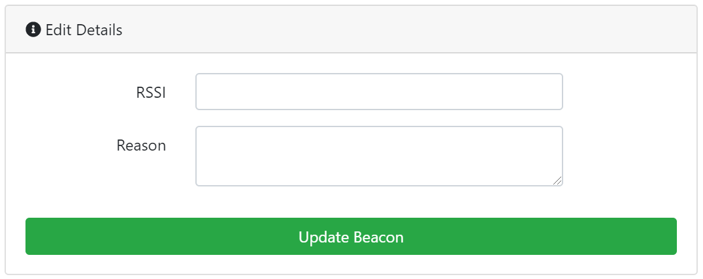
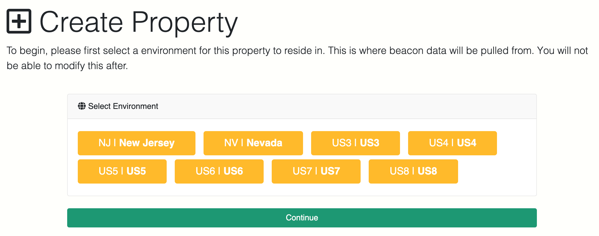

PinPoint is GeoComply’s secure on-property mobile solution.
Combining the power of Beacons with GeoComply’s robust geolocation technology, PinPoint was designed specifically for the gaming industry’s unique requirements and offers the same real-time anti-spoofing and fraud benefits as our mobile and desktop solutions.
Our current PinPoint deployments include establishments such as Casinos, Sports Bar, Taverns, etc.
Our technology is designed to meet and exceed all applicable compliance requirements for unique on-property use cases while bridging the gap between existing iGaming and land-based gaming regulations. PinPoint is highly scalable and can be custom-tailored to meet a wide range of regulatory and business use cases, including ad-hoc projects under US state regulatory purview.
PinPoint comes into play when the casino operators want their customers to wager on their mobile devices from inside the casino building or when a state’s regulation only allows online mobile sports betting from within a licensed sports bar or casino. Since location data such as WiFi and GPS have a wider accuracy range, the PinPoint solution uses Bluetooth to determine the location of the patron.
Welcome to the PinPoint documentation website! Here you'll find all your documentation needs for the entire PinPoint product.
These documents are divided up into sections for easy reading and quick reference. Please see the navigation on the left to quickly jump between sections. Both Master Beacon (the device) and Beacon Manager (online web app) documents are combined on this web page in their respective sections.
We will occasionally release new features to the PinPoint product to better serve our valued customers. Sections of the documentation that are only applicable to the new versions will be denoted with a blue tag with the version number.
For example, seeing the following labels:
v2.1+ Added in v2.1means that respective section is only for Master Beacon software versions v2.1 and newer.
The version selection dropdown on the top right of all pages can also be used to navigate to an older version of the documentation. The version number is related to the Master Beacon version on your device.
Release notes are currently hosted on the GeoComply release portal. Please contact your GeoComply Account Manager for more information.
Follow these instructions to set up and configure your Master Beacon unit.
Follow these instructions to set up and configure a Negative Beacon. There are 3 options.
When a Negative Beacon is added into Beacon Manager, you can use those parameters (UUID, Major, Minor) to configure a physical Negative Beacon device using its mobile application.
The Field Testing App is an app that allows you to submit transactions for testing purposes. This is helpful if you need to perform integration tests or any proof of concept ideas.
The Beacon Emulator App is an app that allows you emulator a physical master beacon for testing purposes. This is helpful if you need to perform integration tests or any proof of concept ideas.
There are 3 types of integration flows:
The GIF flow is the recommended approach for the PinPoint/Indoor integration.
Unlike the State-Wide flow, the GIF flow requires the client app to only initiate the first call for geolocation check. The client app does not need to actively handle periodic checks.
The application will just need to call the startUpdating() method to start the first geolocation at login. The subsequent periodic checks will be handled by the SDK in a continuous loop until the patron fails a transaction.
The client app should explicitly call stopUpdating() if the user session has ended/logged out or when the app goes into background mode (Android only). When stopUpdating() is called, the SDK will not call for new geolocation checks until startUpdating() is called again. It is advised that the operator app calls startUpdating() again if the app returns to the foreground, the user logs in again, or bet placement.
Flow diagram is shown on the image below.
At the center of the PinPoint indoor solution are the GeoComply Master Beacons. These custom devices offer a turn-key solution for operators to efficiently geofence an entire property, floor or zone.
The PinPoint geolocation solution primarily works with GeoComply Initiated Flow (GIF) of mobile SDKs. To know more detail about GIF flow, refer to the latest document “GeoComply iOS/Android SDK, GeoComply Initiated Flow, Interface Definition”.
Follow these instructions to set up and configure your Master Beacon unit.
Using an incorrect PoE protocol may cause damage to the Master Beacon unit.


The master beacon will automatically reboot and will be ready to use.

| RED light | GREEN light | Meaning |
|---|---|---|
| OFF | OFF | No power supplied |
| FLASHING | Unspecified | The power supply voltage is under 4.3V |
| ON | OFF | Have sufficient power supply but the Master Beacon is not running |
| ON | FLASHING | Master Beacon is booting up |
| FLASHING | ON | Master Beacon is in setup mode |
| OFF | ON | Master Beacon is in regular operator mode |
The PinPoint Master Beacon connects to GeoComply servers to allow for indoor geolocation. To ensure the Master Beacons work properly, confirm the following rules and policies are permitted on your firewall:
| Service | Purpose | Destination | Content | Direction |
|---|---|---|---|---|
| GC Engine Service | Connect to the GeoComply Engine service to retrieve the new settings | *.geocomply.com:443 PROD NJ Engine: 18.214.7.207, 52.44.10.150, 72.44.48.9, 18.211.62.154; PROD US2 Engine: 52.207.111.112, 52.200.151.67, 18.234.14.24, 3.212.54.81; PROD US3 Engine: 52.206.196.78, 3.215.162.148, 52.2.98.94, 3.214.187.10; PROD US4 Engine: 3.223.16.224, 52.22.236.59, 23.22.174.156, 54.235.110.208; PROD US5 Engine: 52.45.174.32, 3.224.10.223, 54.91.19.124, 3.231.114.21; PROD US6 Engine: 3.210.29.180, 52.4.244.47, 54.210.224.174, 3.216.236.47; PROD US7 Engine: 54.145.81.158, 18.215.18.185, 100.26.129.131, 3.231.91.30; PROD US8 Engine: 3.211.102.11, 35.172.156.218, 52.55.173.33, 34.226.12.242; PROD US9 Engine: 54.167.215.150, 34.200.62.25, 54.157.148.191, 54.173.166.237; PROD US10 Engine: 52.4.238.15, 52.3.202.162, 52.4.129.19, 52.4.179.99 |
JSON strings with small payload | Outgoing |
| GC Management Service | Allows GeoComply to get access to the device, should it be required for advanced diagnostics, customer troubleshooting, or other critical updates. It is not used in normal Master Beacon operation. | pibeacon-ssh.geocomply.net:22,443 |
JSON strings for communication (port 443), SSH payload for SSH connection (and SSH tunnelling) | Outgoing |
| Beacon Manager Service | Collect Master Beacon data and control the Master Beacons remotely. | pinpoint.geocomply.com:443 |
JSON strings | Outgoing |
| GC Monitoring Service | Monitor Master Beacon hardware. | grafana.geocomply.com:8086,grafana.geocomply.com:2003 (TCP) |
Outgoing | |
| Pub Nub | To keep the connection with PubNub service. | *.pubnub.com,*.pndsn.com,*.pubnub.net,*.pubnub.io. Port 443 is used for SSL, port 80 is used for fallback only, if SSL is not working. Inbound: 54.175.191.192/26 US, 52.9.63.128/26 US, 34.223.51.128/27 US, 52.29.255.168/29 EU, 35.157.63.192/26 EU, 18.179.18.128/25 Asia, 13.232.67.192/27 India. Outbound: 54.236.3.168/29 US, 54.175.191.192/26 US, 54.241.191.232/29 US, 52.9.63.128/26 US, 34.223.51.128/27 US, 54.93.254.232/29 EU, 35.157.63.192/26 EU, 54.250.252.48/29 Asia, 54.249.82.168/31 Asia, 18.179.18.128/25 Asia, 13.232.67.192/27 India |
Outgoing | |
| Elastic Search Log | Collect the system log of the Master Beacon for debug and quality improvement. | server-log.geocomply.net:5044 (TCP) |
Outgoing | |
| Over-The-Air Update | Auto update services on the Master Beacon. | ota-mender.geocomply.com:9000,443 (TCP) |
Binary | Both Incoming and Outgoing |
| Network Diagnostics | To perform diagnostics of the connection to local network | google.com:80,443 (TCP) |
Outgoing |
To confirm that firewall connections are correct, you can run a Diagnostics Test on the Master Beacon unit. See the Diagnostics Tests section for more information.
Based on your property and supplied floor plans, GeoComply will compile a recommended Master Beacon coverage estimation.
Depending on what regulatory policies are in place, you may need to adjust your beacon coverage on-property to ensure bets can only be placed within permitted gaming areas. Some on-property configurations may be required to:
✔ Account for physical space changes.
✔ Ensure full area coverage.
✔ Adjust thresholds for entrances/exits.
✔ Incorporate negative beacons.
Adjusting your coverage can primarily be done in two ways: Adjusting Master Beacon RSSI threshold values or adding Negative Beacons.
See RSSI Threshold for more information.
See Negative Beacons for more information.
The third-party beacon scanners help measure the signal strength emitted by the Master Beacons and Negative Beacons. The scanners can be used to determine the RSSI range, which can help stop the bluetooth signal from bleeding outside of the walls or spaces that might not be a part of the legal wagering space. (See RSSI Threshold
This page outlines third-party applications that can be used to scan for any type of iBeacon compatible beacon. These third-party applications do not integrate with GeoComply systems and do not provide transaction pass/fail details.
For simplicity, an Android device is recommended; however, Apple devices can be used with a few additional steps.
The Beacon can be identified by its UUID.
The apps can scan the beacons and note the RSSI Value for the following areas (and look for any bleeding): middle of the room, by the door, and outside the room. This will help in determining where the Negative iBeacon would fit and if the Master Beacon’s RSSI value needs adjustment.
On Android, these are the two recommended apps:
Android app ‘Beacon Scanner’ example below:
-20), and as you walk away, the signal strength weakens (for example, -100).Updating the RSSI threshold value for a beacon is done in the Beacon Manager. See Beacons for more information.
In contrast to the Master Beacon, Negative Beacons are off-the-shelf third-party beacons that broadcast “negative” signals. These signals establish a range that prohibits people from wagering in a disallowed area.
Disallowed areas can include the entrance door, staircases, parking lots, or specific premises within a building that are either not regulated for wagering or that fall outside of the business' boundaries. Disallowed areas are also useful in situations where the Master Beacon signals unavoidably bleed outside of the walls into a non-regulated premise. This situation can be remedied by using a Negative Beacon to broadcast negative signals in those 'bleeding' spots.
The Negative Beacon's signal has a higher priority than the Master Beacon’s positive signal. This means that should the range of both beacons overlap, the Negative Beacon’s signal takes precedence over the Master Beacon and prevents wagering in disallowed areas. The signal ranges for both the Master and Negative Beacon need adjustment upon installment.
The picture on the left is a USB-powered RadBeacon and on the right is a weatherproof RadBeacon E4. These are the recommended models; however, other models/vendors can be used. More information on where to buy the negative beacons can be found in the ‘Sourcing’ section below.
If you want to test a negative beacon and you do not have a physical device, you can use a simulation app. You can use any iBeacon simulation app available on the market. For example, you can use Beacon Simulator.
Negative Beacons are a perfect way to ensure high accuracy inclusion/exclusion zones at a property. The following image is an example of where to place Negative Beacons to block patrons from playing when exiting or entering an establishment:
Installing Negative Beacons by the doors or any attached establishments where wagering is not permitted is recommended to avoid the Master Beacon signal from bleeding outside of establishment walls or entrance/exit doors. This can include convenience or liquor stores that are part of the same building but illegal to wager.
To make sure the negative signal doesn’t overlap into permitted areas, start by configuring the Negative Beacons to a smaller signal strength and then incrementally increasing it until the correct setting is attained.
Our recommended vendor to purchase the negative beacons from is Radius Networks: https://store.radiusnetworks.com/collections/all. The operator has the option to buy the hardware themselves based on GeoComply’s requirements, or GeoComply can purchase the hardware and bill the operator accordingly.
Should the operator decide to use a different model/brand instead of the ones recommended above, GeoComply needs to be notified in advance to test and confirm compatibility. The Negative Beacon needs to satisfy the following criteria to ensure compatibility:
The operator will manage the Negative Beacons. Several third-party beacon scanners are available to manually manage the Negative Beacons by walking around the property and checking whether the installed beacons are broadcasting the necessary Bluetooth signal. The battery-powered beacons should be put on a battery replacement maintenance schedule by the operator.
We recognize that every property's deployment may have different network configurations and challenges. We have introduced the ability to run tests on the Master Beacon to check network connectivity to our GeoComply servers.
At anytime during the Master Beacon setup process, you can click the "Diagnostic Test" button in the footer to launch this tool. Running directly within the browser, the tool executes a number of network connection check tests to display overall connectivity details to the user. If a firewall on your network is blocking the Master Beacon's connections, this tool easily allows you to identify such device.

If an internet connection is able to be established at the time the diagnostic test is ran, the results will automatically be sent to GeoComply servers.
If the beacon has already been configured, the results will be tied to your configured Beacon in the Beacon Manager web application.
Included with the PinPoint indoor geolocation solution is the Beacon Manager web application, which allows you to easily monitor the Master Beacon's ongoing health, to receive critical uptime alerts, and to list and compare property zones.
The image below shows the structure of Beacon Manager objects.
At present, properties can only be created by GeoComply and any requests should be sent to the GeoComply team.
Master Beacons should be added using the physical beacon UX instructions located in the ‘Master Beacon Installation and Setup’ section of this document. The ‘Create’ beacon functionality is only for older beacon models. Beacons can be monitored directly from the dashboard and are also visible under the Properties, Zones, and Beacons tabs. The RSSI value is the only editable section under every individual beacon.
The RSSI value should be updated using the recommendations under the ‘RSSI Threshold’ section in Beacon Coverage, and a reason must be entered for logging purposes.
The ‘Edit’ option at the top right corner located under a beacon lets you edit the RSSI value of the beacon as shown below. Empty value means the beacon is broadcasting the RSSI value at its highest.

The Master Beacon can also be deleted (with the correct permissions) on the Beacon Manager by clicking on the ‘Delete Beacon’ option on the top right corner under the individual beacon.
The list of existing Negative Beacons can be found in the Beacons menu, Negative Beacons tab.
To reset your password, you can either click the ‘Account Settings’ link at the footer of the webpage, or open the Beacon Manager login page and click on the ‘Forgot Your Password?’ link below the login button. See below:
To enable Two-Factor Authentication, click on the blue link (see below), and complete the following process:
The Beacon Manager application includes a suite of features to help monitor the PinPoint beacon fleet deployment in your property. You can view the beacon & zone health over a timeframe to help quickly identify any recurring infrastructure-related outages as well as receive uptime alerts per beacon.
The Beacon Manager application includes a suite of features to help monitor your PinPoint beacon fleet deployment in your property.
There are four alert types:
This alert will be created automatically when a new beacon is created. It will be created on a property level. However, if Beacon Offline alert already exists on the property level it won't be created. This feature helps to create such alerts automatically so you are always alerted if any beacon goes offline.
It is possible to configure a certain threshold of Master Beacons that must be offline in order for this alert to be triggered. A value of 0% means this alert will be triggered if a single beacon goes offline within this Property. A value of 100% means this alert will only be triggered if all Master Beacons go offline within this Property.
When alerts are created, you can choose from several notification methods. Some notification channels that can be added are:
Alerts can easily be created within your Beacon Manager alerts page. There are no limits to the number of alerts that you can create.
In order to create a new Webhook Notification you just need to provide a Webhook URL.
For example, if you want to change RSSI value and you provide the Webhook URL below:
https://webhook.site/26b6459a-518c-4899-84c2-cbfd4753a28c
You will get the following JSON payload on your end:
{
"beacon_manager_env": "stg",
"beacon_manager_version": "v1.7.1",
"url": "https://pinpoint-stg.geocomply.net/beacons/233",
"alert_id": 38,
"alert_severity": "NORMAL",
"alert_type": "Beacon RSSI Update",
"alert_timestamp": "2021-02-03T02:54:26.260201Z",
"alert_title": "Beacon RSSI Update!",
"alert_payload": "{\"rssi\":{\"old\":\"-80\",\"new\":\"-81\"}}",
"beacon_id": 233
}
You can find the list of originating IP addresses below:
=== PROD LB IPs ===
100.24.239.209
3.210.100.214
=== PROD APP IPs ===
3.231.24.211
35.175.238.194
=== STG LB IPs ===
34.206.243.60
35.174.96.162
=== STG APP IPs ===
34.228.140.120
3.85.106.90
To configure this type of notification you need to get an Integration Key from PagerDuty. If you need help you can get all necessary information from PagerDuty help page:
https://developer.pagerduty.com/docs/get-started/getting-started/
After the Key has been generated, it can be found on the Services -> Integrations page in PagerDuty. Enter it into the Beacon Manager in the PagerDuty Notification section.
When the event is triggered from Beacon Manager side you will see it in PagerDuty on Incidents tab.
The Beacon Manager application includes a suite of importing features to help quickly add Zones, Beacons, Users and Roles.
User can bulk create zones by uploading a .csv file with the following header:
Note that a maximum of 30 zones can be added in one file upload.
An example of the .csv file:
property_id,name,notes,lat,lon,address,shapefile
2000,load test,test notes,,,,
User can bulk create beacons by uploading a .csv file with the following header:
Note that a maximum of 30 beacons can be added in one file upload.
An example of the .csv file:
name,mac_address,shortcode,type,zone_id,notes
imported beacon,00:00:00:00:00:00,XYZ1,masterBeacon,1017,test notes
User can bulk create users by uploading a .csv file with the following header:
Tags field: Enter comma-separated list tags.
Permission-Roles field: Enter a comma-separated list of valid permission strings and role keys (prefixed with $).
Note that a maximum of 30 users can be added in one file upload.
Send-email field: Enter a string with structure: "true,password,permission,documentation,message:'This is my message'".
An example of the .csv file:
first_name,last_name,email,password,isSuperAdmin,tags,permission-roles,notes,pass_change_login,send-email
Name,Surname,user@mail.com,Pa$$w0rd,0,,"property:2000.beacon.*,property:2000.beacon.update.*,property:2000.beacon.create.*",test notes,,
User can bulk create roles by uploading a .csv file with the following header:
Permissions field: Enter a comma-separated list of valid permissions.
Note that a maximum of 30 roles can be added in one file upload.
An example of the .csv file:
name,key,permissions,notes
New role,new_role,"property:2000.beacon.*,property:2000.beacon.update.*,property:2000.beacon.create.*",role notes
It is possible to bulk create Negative Beacons by uploading a .csv file with the following header:
An example of the .csv file:
name,type,uuid,major,minor,property_id,zone_id,tags,notes,for_always,block_from,block_to
Negative Beacon 1,,47ad845e-ac84-4b12-9744-e9364973a5f1,4,5,133,,,,1,,
It is possible to bulk add Permissions to Users and Roles by uploading a .csv file with no header required.
An example of the .csv file:
property:3724.beacon.*
property:3724.beacon.delete
property:3724.negative_beacon.create.generate
The search results from the Beacon Manager can be rather robust and tedious to scroll through. To create an editable copy of the results outside of PinPoint, you can utilize the export feature. The export will create a .csv file that is generated in a background process and sent to the email address associated with your log-in profile. Searches and exports can be performed for Properties, Zones, Beacons, Alerts, Users and Roles.
To perform an export, you must have the correct permissions assigned in the User Manager. If you are unable to view the 'Export' options at the bottom right-hand corner of the screen, please contact your GeoComply Account Manager.


Select the options you'd like exported from the list (or choose to select/unselect all), and click to Start Export.
A link to the created file will be sent to your email address:
Note: You must be logged into the Beacon Manager on your computer or device to download the .csv file. If you are logged out, it will open another browser window so you can enter your login information.
After clicking the Download File button in the email you received, you may have to click to download the file by selecting the option in the lower left-hand corner of your browser. The .csv file will then open in MS Excel (or a similar program) on your computer, allowing you to modify, filter, sort or save your options.
Also note that you can only run three concurrent exports at one time from the Beacon Manager. If an export fails for any reason you'll see a message similar to this one:
The Status Page provides a snapshot of the operator's current fleet status, including which beacons are currently offline, were recently offline, or any other information such as new alerts and notifications. This page automatically refreshes the status to reflect the current health of the operator team's assigned beacons.
To enable the 'Play Sound' notification, follow the instructions for your selected browser:
To access the Status Page, your user profile must have the property:x.view.basic permission assigned.
This page shows you a live, real-time view of current PinPoint transactions for a specific property.
The map sidebar allows you to choose a specific zone. After making a selection, the map will automatically pan to that zone and will highlight it in orange.
To access the PinDrop map, your user profile must have the property:x.view.pindrop permission assigned.
After creating the user you can elect to send them an email with log in information. If you enable the Send Email option, select which information you want sent, including password, assigned permissions, a link to documentation, and a customizable message.
When you are finished, click Create User.
To add multiple users at the same time, you can upload a .csv file.
This page documents an Advanced Feature and should only be used after directed by your GeoComply Account Manager.
One feature of the PinPoint indoor geolocation solution is the ability to pass property/zone/beacon information to the GeoComply transaction XML response.
This document explains how to take advantage of this feature to allow additional operator logic based on the user's proximity to a beacon zone. Examples include enabling promotions only within property bounds or allowing on-site registration only in certain sections of a property.
There are 3 types of tagged boundaries:
PINPOINT_Property_<property_id>_<property_name>. That value can be changed later.PINPOINT_Zone_<zone_id>_<zone_name>. The override is Yes. That value can be changed later.PINPOINT_Zone_<zone_id>_<zone_name>. The override is No. That value can be changed later.Only one tagged boundary can be passed to the transaction, and the Override flag controls it.
For example, if you added your beacon to a Zone called "SecondFloor," when a transaction occurs within a range of this beacon, you will receive the response:
<boundary name="PINPOINT_Zone_42_SecondFloor"/>
Any property/zone/beacon can be configured as an exclusion. Any beacon located in that property/zone will fail transactions if scanned successfully. Essentially, it will act as a negative beacon. To configure a zone in this manner, you’ll need to make configuration changes in both the Beacon Manager and Back Office. You need to add "-BLOCK-" anywhere in the tagged boundary name. Note that changes should be made in Back Office as well. For more information, contact your GeoComply Account Manager.
There are 3 options:
This page documents an Advanced Feature and should only be used after directed by your GeoComply Account Manager.
Occasionally, platform providers may find themselves wanting to configure Master Beacon devices to a non-production environment. This typically takes place during a development, testing or user acceptance testing (UAT) phase in the operator's product lifecycle. Fortunately, doing so is a breeze with v2.1+ Master Beacon units.
Configuring a Master Beacon unit can be done at the time of set up, and re-configured again should required. After a Master Beacon is configured, the device will be set to use the respective environment's Beacon Manager, GeoComply Engine Service and configuration settings.
In the footer of all pages, you should be able to see the abbreviation of what environment is currently set. If no environment text is visible, the device is configured to production.
Remember that each environment has its own set of Beacon Manager credentials. Your Production Beacon Manager account is different from your Staging Beacon Manager account and may have a different email address or password.
Each Master Beacon may be configured to four (4) available environments at the time of setup. All units are configured by default to Production (PROD).
| Environment | Purpose | URL |
|---|---|---|
| Production (PROD) | Live operators with end users. | https://pinpoint.geocomply.com |
| Staging (STG) | Commonly used during the customer integration or testing phase. | https://pinpoint-stg.geocomply.net |
| QAT-current | Internal GeoComply testing only. | |
| QAT-development | Internal GeoComply testing only. |
After you've connected to the Master Beacon's Wi-Fi set up access point, you can configure a Master Beacon unit to a different environment by navigating to http://masterbeacon.pinpoint/users/env_config or http://192.168.4.1/users/env_config.

This environment configuration will remain valid through all new sessions and device restarts until it is modified again.
This page helps to explain all possible errors. You can find the list of errors along with the troubleshooting steps below.
This error occurs when a device's RSSI value is lower than the RSSI threshold value configured for the corresponding beacon.
Now we need to get RSSI value from Kibana.
Next you need to check the RSSI threshold for the beacon.
Finally, you just need to compare “beacons.rssi” value from Kibana and “RSSI” value from Beacon Manager.
In order to check errors related to negative beacons you need to perform following steps:
Alternatively, you can find the same information in Kibana.
If there is no “Beacons” tab in the Back Office on the “Transactions” page, the error is caused by one of the following: bluetooth was disabled, location was disabled or there were no beacons in the proximity.
The Beacon Manager features an extensive permissions system to allow effective access management for all users. Almost every function in the Beacon Manager is tied to a permission, which means features can be enabled/disabled for individual customers depending on the needs of their deployment.
The Access Management Dashboard offers a quick overview of entire permissions system of the Beacon Manager application. Here you can see a glance of all users and roles in the system.
There are two types of permissions on the Beacon Manager: System Permissions and Property Permissions. Regardless of the type of permission, each permission grants a user access to a function of the Beacon Manager.
All permissions are generally referenced by their permission string. For example, system.access.user.create is a permission that grants system level access permission to create a user. Familiarizing yourself with the general format of permission strings will allow for quick entry. (Permissions will generally auto complete as you type.)
No need to worry about knowing these permission strings when starting out however, as a convenient selector tool has also been created that can be used anytime a permission needs to be added.
In addition to this central documentation, permission documentation is provided within the Beacon Manager itself. If you see a permission, you can move your mouse over it to reveal help text.
"Superadmin", high-level, or internal permission are otherwise known as System Permissions. These permissions generally grant access to features that span over the entire Beacon Manager application. Examples might include creating a property, viewing users' Audit Log entries, or creating new user accounts.
System Permissions typically follow the format of system.<permission>.
You can view all System Permissions on the System Permissions Definitions page.
Property Permissions, as the name suggests, grant permission to Property-specific functions. The Beacon Manager Access Controls allow for a user to have different permissions on a per-property basis. For example, we may grant internal staff edit access only to a few Properties, but read access to all.
Property Permissions follow the format of property:<property_id>.<permission> where <property_id is the unique Property ID of the property in the Beacon Manager.
You can view all Property Permissions on the Property Permissions Definitions page.
To better illustrate the hierarchy and structure of permissions, an interactive Permission Tree has been added to the Beacon Manager. This permission diagram shows all permissions the current user has, and includes documentation that opens when you click on a particular permission.
In addition to permissions, a user can be assigned to be a Super Admin. This is the highest level of permission for the Beacon Manager and automatically includes all permissions.
Another integral part of the Beacon Manager Access Controls system is the roles feature. External customers will routinely require a similar set of permissions for their user accounts. This is where roles come into play.
Roles allow for a pre-defined set of permissions to quickly be assigned to a user. There is no limit to the number of permissions you can assign to a role.
Roles can be created by users that have the system.access.role.create permission.
When creating a role you can specify the following:
Roles can also be bulk imported via a Comma-Separated Value (CSV) file. This can be done by users who have the system.access.role.create.import permission.
A *.csv file can be uploaded by going to the Create Role page and clicking upload a .csv file.*
When creating a new role, this feature provide the best way to copy permissions from another role. Also, a user can change the Property specified in the permissions. This can be done by users who have the system.access.role.create permission.
A modal will show on the Create Role page when clicking the Copy Existing Role button.
All users in the Beacon Manager can have an unlimited number of roles and permissions assigned to them. Having the system.access.user.view.update permission allows a user to edit other users' roles and permissions.
Permissions and roles can be assigned to a user in two ways. On the user edit page, you can either:
Use this page as a reference for all permission definitions on the Beacon Manager.
This section defines all System Permissions.
These permissions grant access to all properties at the property-level on Beacon Manager. Users with these permissions will have assigned permissions for all properties. Controlling specific access permissions on a per-property basis is not possible when assigning these permissions. Thus when this functionality is required we recommend assigning Property Permissions instead.
| Permission | Description |
|---|---|
system.properties.* |
Grants all actions across all properties. |
system.properties.create |
Allows for a new property to be created. Upon creating a new property, the user will be assigned all permissions for that property. |
system.properties.view |
View access to all properties. |
system.properties.view.update |
View & update access to all properties. |
system.properties.view.delete |
View & delete access to all properties. |
These permissions grant access to the API Authentication/Authorization portions of the Beacon Manager.
Most users do not need these permissions.
| Permission | Description |
|---|---|
system.token.* |
|
system.token.view |
View access to all existing API authentication tokens. |
system.token.view.update.* |
View and update access to all API authentication tokens. This is identical to the permission: system.token.* |
system.token.view.update.expire |
View and only update expiry date on existing API authentication tokens. |
system.token.view.update.revoke |
View and only revoke existing API authentication tokens. |
These permissions grant access to the API client portions of the Beacon Manager.
Most users do not need these permissions.
| Permission | Description |
|---|---|
system.client.* |
|
system.client.view |
View access to all existing API clients. |
system.client.view.create |
Create new API clients. |
These permissions grant access to the Beacon Manager Access Dashboard, which allows the user to manage users, roles and permissions. It is recommended to assign lower level permissions in this category to grant specific permissions, such as only updating existing users.
| Permission | Description |
|---|---|
system.access.* |
|
system.access.user.* |
Grants all user management permissions. |
system.access.user.view |
View existing users and their account information. |
system.access.user.create |
Create new users and assign them permissions and roles. |
system.access.user.create.import |
Mass create new users via CSV import function. |
system.access.user.view.update |
View and update existing user information. |
system.access.user.view.delete |
View and delete existing users. |
| Permission | Description |
|---|---|
system.access.role.* |
Grants all role management permissions. |
system.access.role.view |
View existing roles and their assigned permissions. |
system.access.role.create |
Create new roles and assign them permissions. |
system.access.role.create.import |
Mass create new roles via CSV import function. |
system.access.role.view.update |
View and update existing role information. |
system.access.role.view.delete |
View and delete existing roles. |
These permissions allow users to see detailed log messages sent by compatible Master Beacons. Most users do not need these permissions.
| Permission | Description |
|---|---|
system.beaconlog.* |
|
system.beaconlog.view |
View all beacon log messages. |
system.beaconlog.view.delete |
View and delete existing beacon log messages. |
The Beacon Manager access log saves most user actions in the Beacon Manager. Most users do not need these permissions.
| Permission | Description |
|---|---|
system.auditlog.* |
|
system.auditlog.view |
View the user's own audit log messages. |
system.auditlog.view.others |
View all users' audit log messages. |
| Permission | Description |
|---|---|
system.internaldocs.view |
Grants the user access to view "internal" documentation pages on the Beacon Manager documentation site |
This section defines all Property Permissions.
It's important to note that the x in these permissions must be replaced with the Beacon Manager Property ID of the property you wish the permission to apply to.
These permissions grant users access to specified properties only. Many permissions are included in this category which allows for effective enabling/disabling of certain Beacon Manager features at a per user level.
Due to the sheer number of permissions contained in this category, it is highly recommend to create pre-defined roles which can then be quickly assigned to users.
| Permission | Description |
|---|---|
property:x.* |
|
property:x.view.basic |
Allows for basic view access to the property and all its zones and beacons. |
property:x.view.users |
Grants access to view other users that have view access to this property. |
property:x.view.licenses |
Grants access to view license limitations for this property. |
property:x.view.update.* |
Grants all update access to this property. |
property:x.view.update.basic |
Grants permissions to update basic fields for this property. |
property:x.view.update.engine_url |
Grants permissions to update engine url and path fields for this property. |
property:x.view.update.address |
Grants permission to update address field for this property. |
property:x.view.update.loc |
Grants permission to update location coordinate fields for this property. |
property:x.view.update.licenses |
Grants permission to update license limitations for this property. |
property:x.view.delete |
Grants permission to delete this property. |
property:x.view.pindrop |
Grants permission to view this property's live PinDrop transaction map. |
property:x.view.update.pindrop |
Grants permission to modify property and zone shapefiles used for PinDrop maps. |
property:x.view.statuspage |
Grants permission to view this property's live status page. |
These permissions grant users additional edit access to zones under the specified properties only. Many permissions are included in this category which allows for effective enabling/disabling of certain Beacon Manager features at a per user level.
Due to the sheer number of permissions contained in this category, it is highly recommend to create pre-defined roles which can then be quickly assigned to users.
| Permission | Description |
|---|---|
property:x.zone.* |
|
property:x.zone.create |
Create new zones in this specified property. |
property:x.zone.create.import |
Mass create new zones via CSV import in this specified property. |
property:x.zone.update.* |
Grants all update access to zones in the specificed property. |
property:x.zone.update.basic |
Grants permission to update basic fields for zones in this specified property. |
property:x.zone.update.address |
Grants permission to update address fields for zones in this specified property. |
property:x.zone.update.loc |
Grants permission to update location coordinate fields for zones in this specified property. |
property:x.zone.update.floorplan |
Grants permission to upload a floor plan to zones in this specified property. |
property:x.zone.delete |
Grants permission to delete zones in this specified property. |
These permissions grant users additional access to beacons under the specified properties only. Many permissions are included in this category which allows for effective enabling/disabling of certain Beacon Manager features at a per user level.
Due to the sheer number of permissions contained in this category, it is highly recommend to create pre-defined roles which can then be quickly assigned to users.
| Permission | Description |
|---|---|
property:x.beacon.* |
|
property:x.beacon.view.advanced |
Grants view permission for advanced fields such as "created by" and "created via" for beacons in this specified property. |
property:x.beacon.view.scan.* |
Grants view permission for all scanning features for beacons in this specified property. |
property:x.beacon.view.scan.wifi |
Grants view permission for wifi scanning features for beacons in this specified property. |
property:x.beacon.view.scan.bluetooth |
Grants view permission for bluetooth scanning features for beacons in this specified property. |
property:x.beacon.create.* |
Grants all create beacon permissions in this specified property. |
property:x.beacon.create.web |
Grants create beacon permissions via web for specified property. No longer used. |
property:x.beacon.create.web.import |
Grants create beacon permissions via web and mass CSV import for specified property. No longer used. |
property:x.beacon.create.api |
Grants create beacon via API permission for this property. Required to allow user to go through Master Beacon set up. |
property:x.beacon.update.* |
Grants update permissions for all fields for beacons in this specified property. |
property:x.beacon.update.floorplan |
Grants permission to update floor plan location for beacons in this specified property. |
property:x.beacon.update.rssi |
Grants permission to update beacons RSSI values in this specified property. |
property:x.beacon.delete |
Grants permission to delete beacons in this specified property. |
These permissions grant users access to the alerting features of the Beacon Manager. Many permissions are included in this category which allows for effective enabling/disabling of certain alert notification channels.
| Permission | Description |
|---|---|
property:x.alert.* |
|
property:x.alert.view |
Grants access to view alerts contained in this property, its zones and beacons. |
property:x.alert.view.hidden |
Grants additional access to view hidden alerts. |
property:x.alert.create |
Grants access to create new alerts for this property, its zones and beacons. |
property:x.alert.view.update.* |
Grants all updating permissions for alerts in this property, its zones and beacons. |
property:x.alert.view.update.basic |
Grants only basic update permissions for alerts. |
property:x.alert.view.update.email |
Grants access to view and set up email notification channel. |
property:x.alert.view.update.slack |
Grants access to view and set up Slack notification channel. |
property:x.alert.view.update.webhook |
Grants access to view and set up webhook notification channel. |
property:x.alert.view.update.pagerduty |
Grants access to view and set up PagerDuty notification channel. |
property:x.alert.view.delete |
Grants delete permissions to alerts in this property, its zones and beacons. |
The Master Beacon will automatically connect to the production server ota-mender.geocomply.net. When the Master Beacon boots up, it connects to the server and requests authorization. You'll have to manually accept this request before using the OTA updating feature. To do this:
In the future, a pre-authorization feature will be available. This will streamline the process so that the Master Beacon request is automatically accepted without needing any further action for the Beacon to connect to the server, thus removing the previously listed steps from the process.
There are two types of updates: a system update and a service update. Both use the same method to update the Master Beacon, but the system update tends to take much longer than the service.
The development team will prepare a file (with a naming structure of filename.mender) with the updated code and upload it to S3 so it is available when you are ready to run the update.
Go to ota-mender.geocomply.com/ui/#/releases. Click 'Upload', then select the correct file from the list (note: update files will have the suffix .mender). Click 'Upload' to start the process.
After the file is uploaded, you'll need to select which device is to receive the update (i.e. the 'target device'). To do this, you'll have to create a deployment which will assign which file goes to which device. In essence, the deployment is the process by which the Master Beacon is updated.
To start the process, go to ota-mender.geocomply.com/ui/#/deployments. Click 'CREATE DEPLOYMENT WITH THIS RELEASE'; then select which device you want to update. The drop-down list of device options will appear when you place the cursor in the selection box:
Click 'Next' to review the deployment information, then click 'CREATE' to trigger the deployment. The deployment will start by downloading the file into the target Master Beacon. During a system update, the deployment will advance through the following steps: download > backup data > switch active partition > reboot > sync data > commit update > complete.
To check the status of the deployment, access the log on the UI at ota-mender.geocomply.com/ui/#/deployments under the "Active" or "Finished" tabs. To confirm the device has the correct software, click on the "Devices" tab.
To see a live demo of using Mender, please check Demo Video.
The Global Settings page allows you to store certain settings in one location for use across the Beacon Manager. Note that if the settings on the page are configured incorrectly, it could break application functionality, so confirm any entered information before saving your settings.
There is a possibility to see BO settings on the View Property page under BO Settings tab. It displays predefined settings from BO for the corresponding operator. The main purpose of this page is to validate if an operator was configured correctly for Indoor and Hybrid. It also helps to get some settings from BO without logging in to BO.

The user should have system.tools.docs_generator permission to access the page and system.internaldocs.view to generate the internal section.


After the Property has been created on its page all the details ( including Operator name and Operator ID) will be displayed:
Adding Master Beacons should be done via the physical beacon UX as instructed in the ‘Master Beacon Installation and Setup’ section of this document. The ‘Create’ beacon functionality is only for older beacon models. As Creating a Beacon directly on the Beacon Manager is no longer supported for new beacons. The correct behaviour is to configure the Beacon directly on the device itself. To prevent someone from creating a new beacon on the Beacon Manager by mistake, the following notice will appear after clicking ‘Create beacon’ button:
Beacons can be monitored directly from the dashboard and are also visible under Properties, Zones and Beacons tabs. The RSSI value is the only editable section under every individual beacon. The RSSI value should be updated as per the recommendation under the ‘RSSI Value’ section in Beacon Scanner, and a reason has to be filled in for logging purposes. ‘Edit’ option at the top right corner when under a beacon lets you edit the RSSI value of the beacon as seen below. Empty value means the beacon is broadcasting the RSSI value at its highest.
The Master Beacon can also be deleted should you have the permission to do so on the Beacon Manager by clicking on the ‘Delete Beacon’ option on the top right corner under the individual beacon.
At present, only GeoComply has the ability to create users, assign permissions and delete users in Beacon Manager. This can be found under the ‘Users’ tab on the top right panel.
You can find more information how to create a user here: Create User.
###Creating, Editing and Deleting Users
Add Property: Under Property Permissions, click on ‘Add Property’ and select the property the user belongs to.
Add Permissions or Rule: This is where you would include all the permissions or rules the user needs depending on their role. Usually, the operator will specify these permissions for the requested user. Following is a list of permissions available in Beacon Manager:
Delete Users: Select the user and click on ‘Delete User’ at top right to delete
Edit Users: The same tab ‘Users’ on top right panel can be used to edit these settings by clicking on ‘View User’
Permission Matrix for Beacon Manager Roles
| Role | Permissions | Notes |
| : | :- | : |
| Client Master Admin (for clients Admins) | property:x.alert.view
property:x.alert.create
property:x.alert.view.update.*
property:x.alert.view.delete
property:x.view.basic
property:x.view.update.address
property:x.zone.create
property:x.zone.update.basic
property:x.zone.update.address
property:x.zone.update.loc
property:x.zone.delete
property:x.zone.update.floorplan
property:x.beacon.create.api
property:x.beacon.update.floorplan
property:x.beacon.update.rssi
property:x.beacon.delete | Property Zone Create Import - Not mandatory. It should be assigned only by request (e.g if there is a need of a large number of zone imports) |
| Client Read Only (for client CS teams) | property:x.alert.view
property:x.view.basic ||
| Client Site Tech (for tech admins who will create and update beacons) | property:x.view.basic
property:x.view.update.address
property:x.beacon.create.api
property:x.beacon.update.floorplan
property:x.beacon.update.rssi
property:x.beacon.delete
property:x.alert.view
property:x.alert.create ||
| GeoComply RO (for GC CS) | system.properties.view
system.token.view
system.client.view
system.access.user.view
system.access.role.view
system.beaconlog.view
system.auditlog.view
system.internaldocs.view ||
To simplify understanding of permissions and roles the following view can be used under the "System Permissions" or "Property Permissions" items:
To make the Permission Tree the most accessible and to improve offline readability, a detailed Export feature can help ( the Exported file will be in a .csv format):
###Operators Management
The following settings in Back Office - Operators Management > Indoor need to be set before the Beacons can be setup in Beacon Manager:
###Device Settings
This functionality will be deprecated in BM 1.9. Negative beacons will be managed in BM.
Every Negative Beacon needs to be added as an ‘Exclusion’ in Back Office - Device Settings for GeoComply to fail patrons when in the Negative Beacon range.
##Internal Contacts
| Name | Position | |
|---|---|---|
| Sam Basile | sam@geocomply.com | General Manager, PinPoint [LV] |
| Thomas Dinh | thomas@geoguard.com | Head of Development (All products) |
| Oliver Sainsbury | oliver@geocomply.com | Head of Service Delivery (All products) |
| Rai McKenzie | rai@geoguard.com | PinPoint Technical Product Coordinator |
| Kenny Ho | kenny@geoguard.com | PinPoint Development Lead [VN] |
| Vadym Ustinov | vadym@geoguard.com | Primary Infrastructure Contact [UA] |
| Victor Shvets | victor@geocomply.com | Technical Support Engineer - PinPoint [VA] |
###Slack Channels
| Name | Description |
|---|---|
| #pinpoint | High level PinPoint discussion and updates. Targeted at business & regulatory related discussion. |
| #pinpoint_vn | Vietnam development & QA technical discussions. |
| #pinpoint_infras | Infrastructure and deployment discussions & notifications. Use #gc_infra_support for urgent needs. |
| #pinpoint_dev | Development notifications. Not generally used. |
| #pinpoint_intralot | Discussions specifically pertaining to customer, Intralot. |
| #pinpoint_dk_ia | Discussions specifically pertaining to customer, DraftKings in Iowa. |